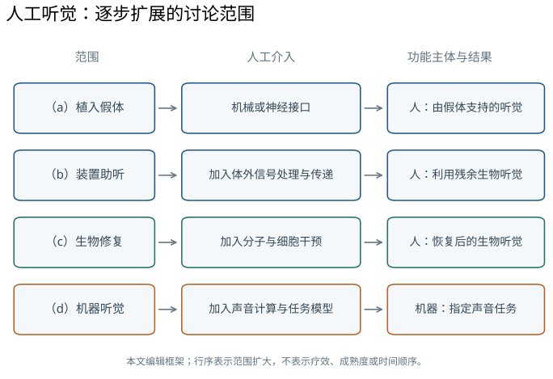
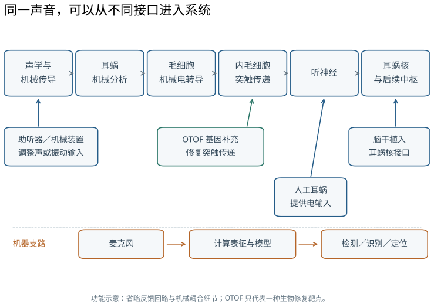
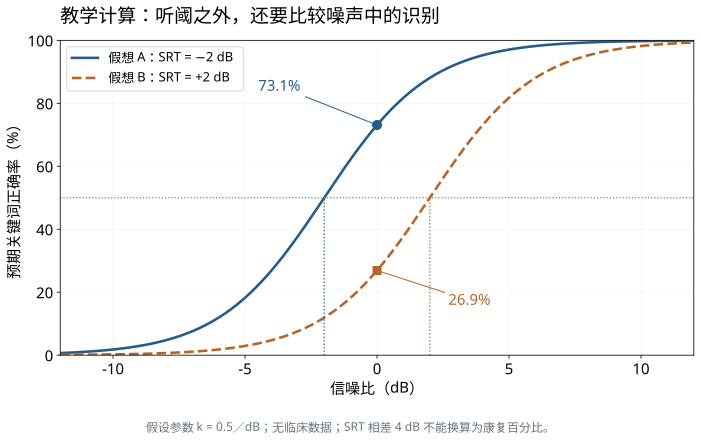

人工听觉
Artificial Hearing · 深度词条 · Draft · 2026-11-24
人工听觉（artificial hearing）在本词条的核心用法中，指人通过人工构建的听觉接口获得或重建声音感知的过程与能力，重点是人工耳蜗等植入式听觉假体提供的听觉。装置把声音转换为生物听觉系统能够利用的输入；听神经、中枢处理、既往经验和学习共同参与最终的感知。人工耳蜗提供的电刺激输入具有自己的编码约束，因此其功能不能仅用“把声音放大”来解释。13
范围扩大后，这个词也可以用来讨论助听器等装置支持的听觉、人工干预生物过程后恢复的听觉，以及机器对声音的检测、辨识与理解。不过，这四个范围是本词条为连接研究问题采用的编辑框架，并非已被统一采纳的四级学科定义。前两层关注人怎样借助装置听见；生物修复层关注技术怎样恢复自身的传导和转导过程；机器层则把声音信息处理的主体扩展到计算系统。21016
理解人工听觉，需要同时追问三个问题：人工介入发生在哪里，什么信息被保留或重新编码，最终由谁完成什么任务。围绕这些问题，器械、细胞治疗和人工智能才能放入同一个讨论框架，同时保留各自的科学含义。
定义的四个范围
从听觉假体到机器系统
| 范围 | 本词条纳入的对象 | “人工”体现在哪里 | 主要判断对象 |
|---|---|---|---|
| 狭义：植入式听觉假体 | 人工耳蜗、听觉脑干植入，以及其他植入听觉接口 | 人工器件向听觉系统提供可用输入 | 接口能否产生并支持人的声音感知 |
| 较广义：装置辅助的听觉 | 加入气导助听器、外戴骨导装置、远程麦克风等 | 改变到达耳部的信号、传递途径或信息条件 | 在具体场景中是否改善聆听 |
| 更广义：人工干预后的生物听觉 | 加入基因补充、基因编辑、细胞或再生策略带来的功能恢复 | 人工介入分子与细胞过程 | 修复是否转化为持久的生物听觉功能 |
| 最广义：人工实现的声音感知功能 | 加入机器听觉、机器人听觉与声音理解系统 | 计算系统完成检测、分离、识别、定位等任务 | 系统的任务表现、泛化及可靠性 |
这张表扩大的是讨论范围，不是按疗效、先进程度或临床优先级排列技术。机器听觉也不是基因治疗进一步发展的必然阶段。不同论文可能把 artificial hearing、artificial audition、auditory prosthesis 或 machine hearing 用在不同语境；检索与写作时应说明实际讨论的对象，不能仅凭英文标题判断其技术路线。
“听觉假体”通常指装置，“电听觉”强调电刺激引出的听觉，“听觉康复”还包括训练、沟通与环境支持。人工听觉可以连接这些概念，却不能替代它们的具体定义。对于治疗后的状态，“基因治疗后恢复的听觉”通常比笼统说“人工听觉”更准确；对于计算系统，“机器听觉”则直接说明了主体。
植入位置与作用机制需要分开
植入式装置并不都直接刺激神经。中耳植入装置可通过换能器驱动机械振动，植入式骨导装置可经颅骨传递振动；这些路线仍需要可利用的耳蜗转导。人工耳蜗则借助电极刺激听神经，听觉脑干植入进一步把接口放到耳蜗核区域。因此，若将所有植入式助听装置纳入狭义范围，还应区分其中的机械助听假体与神经听觉假体。256
同样，基因治疗不因没有长期佩戴的处理器就成为非侵入式干预；内耳给药可以涉及手术。非侵入式、植入式、电子式和生物式描述不同属性，不宜压缩成一条从“简单”到“复杂”的序列。13

听觉链条中的不同接口
补偿、替代与修复
自然声学听觉包含外中耳的声音传导、耳蜗的机械分析、毛细胞机械电转导、内毛细胞的突触传递，以及沿听觉通路展开的神经处理。技术可以在不同位置介入：助听器调整送入系统的声学输入，机械植入装置改变传导，人工耳蜗在神经入口附近提供替代信号，生物治疗则尝试恢复链条内部某个过程。1210
三种逻辑需要分别解释。补偿利用仍存在的能力，使输入更可用；替代绕过部分受损过程，以另一种信号驱动下游；修复使受损过程重新发挥功能。同一方案可以兼有多个目标，例如人工耳蜗保留并利用残余声学听力时，就同时包含电刺激替代与声学输入利用。将这些机制拆开，比笼统评价哪一种“更接近真耳”更有助于解释结果。20
输入成功之后还有哪些条件
让某一环节产生反应只是功能链的一部分。声学能量到达耳蜗，不保证内毛细胞能正常释放递质；电极引出神经响应，不保证不同电极传递的信息相互独立；脑内出现可测活动，也不自动等于听懂一句话。研究应顺着接口向下游追踪，而不能用最近、最容易测到的反应替代最终目标。
这也解释了为什么相似的听力图可能对应不同的技术需要。听阈描述检测表现，不能唯一确定病理位置；同一个听阈也不能指定唯一的装置或生物治疗。OTOF 相关突触障碍与感觉细胞大量丢失可有相似的严重听力表现，前者的基因补充思路却不能直接用于后者。1015

植入式神经听觉假体
人工耳蜗：从声音到可学习的神经输入
典型人工耳蜗由麦克风、声音处理器、传输链路、植入刺激器和电极阵列构成。处理器分析声音的频谱与时域变化，把选择出的信息映射为不同电极上的脉冲序列。耳蜗内不同位置与频率存在频位映射关系，空间刺激分布因而可以承载频率信息；脉冲幅度、时序及通道间安排则参与传递强度与动态变化。3
这是一种编码设计，而不是把原始声波完整送入神经。以连续交错采样（continuous interleaved sampling，CIS）为例，各分析频带的包络用于控制刺激幅度，不同电极按不重叠的时序依次发放脉冲。Wilson 等 1991 年在七位有经验的植入者中比较该策略与当时的压缩模拟处理，说明时序安排本身可以改变言语表现。该小样本历史比较支持编码设计的重要性，不能用来保证任何现代设备之间的差异。4
电刺激绕过毛细胞过程，也改变了神经群体被驱动的方式。电流扩散使相邻电极可能招募重叠的纤维群体；电极数、分析频带数和有效独立信息通道数因此不能画等号。Friesen 等对声码器与真实植入者的比较表明，增加名义通道数带来的收益取决于听者、材料及噪声条件；早期设备实验的某个转折点不应被写成所有人工耳蜗的固定上限。21
脑干与中脑接口：绕过的位置继续改变
听觉脑干植入（auditory brainstem implant，ABI）主要在耳蜗核区域提供电刺激，可用于部分无法从人工耳蜗获得适当输入的人群。此时绕过的不只是毛细胞，还包括无法利用的耳蜗或听神经环节。解剖可达性、肿瘤与手术对组织的影响、病因及可利用神经结构都可能限制结果。56
脑干植入的效果不能统一写成“只能听见声音”，也不能简单套用人工耳蜗的言语成绩。Colletti 等的随访报告中，一些非肿瘤成人获得了开放式言语识别，个体差异很大，且与肿瘤组存在明显差别。这提供了超出声音检测的证据，但属于特定中心与病因构成的观察结果，不能作为所有接受者的预期成绩。5
听觉中脑植入（auditory midbrain implant，AMI）研究将接口进一步放到下丘，尝试利用其频率组织。Lenarz 等的原型论文解释了这一靶点的动机与器件设计。它适合用来说明接口可以向中枢扩展；单凭概念与原型研究，不能把它列为与人工耳蜗具有相同证据成熟度的常规选择。越靠近中枢并不自然意味着信息传递越充分，所需处理的神经组织也随之改变。6
装置输出与听觉体验之间
电听觉的描述还必须包括个体映射和学习。刺激可检测范围、舒适范围、各电极的可用性以及频率分配会影响输入；听者还要把新的输入与声音类别、语言及经验联系起来。儿童语言发展的纵向研究提示，植入年龄、既往听觉状况和家庭互动等因素与发展速度有关，平均结果并不自动达到同龄常模。19
“听起来是什么样”也不能由一段声码器音频替所有使用者作答。声码器能操纵正常听力听者接收到的频带或时域信息，适合检验信息线索；它仍通过正常声学耳蜗进入系统，没有重建实际的电极电场、神经存活分布与长期听觉经历。Shannon 等的经典实验说明少量宽频带包络在特定材料中可以支持较好的识别，不能据此断言植入者主观体验就是该模拟声音。721
助听装置支持的听觉
放大之外的信号组织
气导助听器在声学域改变输入，输出仍需经过耳的生物转导。现代处理可包含分频增益、宽动态范围压缩、方向性、反馈抑制和降噪。各模块处理不同问题：增益补偿部分可听度不足，压缩协调输入声级与残余动态范围，方向性利用声源方向差异，降噪在保留目标声与减少干扰之间作权衡。
这些操作的目标不能只写成“越大声越好”或“越安静越好”。输出过低可使线索不可听，过高又可能影响舒适度；快速增益变化可能改变包络，强抑制可能同时削弱语音。Brons 等针对三种单麦克风降噪方案的实验中，噪声烦扰降低与言语识别提高并未同步出现。因此，舒适、偏好与可懂度需要分别测量；这个结果也不应被推广为所有后来的降噪算法都不能改善识别。8
远程麦克风体现另一条思路：在靠近说话人的位置获取信号，改变采集端的目标声与环境声关系，再传给听者。它提醒我们，人工听觉的性能不仅由耳上的装置决定，还取决于房间、距离、混响和声音采集位置。改善环境与改变处理算法可以相互补充，评价时也需要明确哪一环节发生了变化。
骨导与中耳机械输入
骨导装置利用颅骨振动把信息送到内耳，既有外戴耦合形式，也有植入形式；中耳装置则可直接驱动中耳结构。两类装置都说明，“体内有人工部件”与“用电流直接编码听神经”不是同一个判据。2
分析这类系统时应说明声音从哪里采集、振动耦合在哪里、最终由哪一侧耳蜗利用，以及是否仍保有足够的感觉功能。尤其在单侧聋的声音转送方案中，把声音送到能够利用它的一侧，与在两侧分别建立神经输入是不同目标；评价不能仅依据“戴了两个部件”就宣称形成了正常双耳听觉。
验配与真实生活是评价链的一部分
装置参数是输入条件，听者获益是结果。真耳测量可检查耳道中的实际输出与目标是否相符；言语测试回答某种材料能否被理解；日常问卷或情境记录则涉及现实使用。它们互相补充，但任何一种都不能独自覆盖全部人工听觉效果。
Wu 等的交叉研究在轻中度听力损失老年人中比较了两档助听器及方向性、降噪功能开关。部分受控实验室优势并未清楚转化为两档设备之间的日常自评差异。研究说明，场景暴露与评价方法会改变结论；它并不证明设备功能毫无价值，也不保证某个实验室优势一定被日常使用者察觉。9
生物修复后的听觉如何纳入
人工的是干预，生物的是恢复后的功能链
将听力损失的基因治疗纳入人工听觉，是把“人工”从持续工作的器件扩展为技术介入的起源。对于成功恢复的生物过程，日后的声音仍可能经毛细胞、突触和神经系统产生听觉；无需因此把该体验称作电听觉。这个层次更适合使用“技术促成的生物听觉恢复”来解释。
OTOF 提供了一个具体案例。该基因编码的耳畸蛋白参与内毛细胞的突触囊泡胞吐。Roux 等在缺失小鼠中观察到，部分上游电生理与突触形态保留，而胞吐严重受损。补充功能性基因的目标因此落在细胞与听神经之间的递质传递接口；它与电极绕过该接口的路径不同。10
修复也可能是不完全的。Al-Moyed 等的双 AAV 小鼠实验恢复了快速胞吐，但囊泡补充等方面仍未完全达到野生型水平。由此不能只凭某种蛋白出现或一次神经响应恢复，就推断持续声音编码、噪声言语理解和全部听觉体验已经正常。11
人体证据与监管状态
截至 2026 年 11 月 24 日本次核验，OTOF 路线已有扩大人群与延长随访的报告。Jiang 等 2026 年发表的多中心单臂研究纳入 42 名参与者，最长随访达 2.5 年，报告听觉反应、行为测听及言语感知改善。这说明生物修复已进入可检验的人体功能层面；“最长 2.5 年”不表示所有人均有同样长的随访，也不等于终生稳定已经证实。12
美国 FDA 于 2026 年 4 月 23 日加速批准 OTARMENI（lunsotogene parvec-cwha）。说明书限定为具有分子确证的双等位基因 OTOF 变异、保留外毛细胞功能、同耳既往未接受人工耳蜗植入，并符合其严重听力损失条件的儿童及成人。批准依据包括 24 周纯音平均听觉敏感性改善，持续批准可能取决于确认性临床获益验证。这里的批准属于特定产品、适应证和美国监管范围，不能外推为全部耳聋已有基因疗法。1314
该产品与 Jiang 等报告的 AAV1-hOTOF 研究不是同一制剂，不能混合样本计算一个共同“治愈率”。即便治疗的基因相同，载体、表达设计、入组和终点也可能不同。尤其应区分“较基线改善”“达到研究终点”和“各项听觉功能进入正常范围”这三类判断。
基因补充、编辑与再生的不同任务
基因补充需要可接受递送并发挥功能的细胞；基因编辑针对特定序列或异常等位基因作用；再生则需要重建丢失的细胞及其连接。它们可以交叉，但不会因为都涉及分子操作而自动共享临床证据。
成年小鼠支持细胞重编程研究已显示，组合转录因子可诱导部分毛细胞样细胞出现，具有若干标志及结构特征。细胞身份、成熟机械电转导、突触连接和实际听觉恢复仍是不同问题。由细胞标志或形态推到人体交流能力，中间需要补足多层证据。15
把生物修复纳入本词条的价值，在于可以与假体比较“恢复原有过程”和“提供替代输入”各自解决的问题；其边界是不能用“人工耳蜗最终将被全部替代”概括不同病因、组织状态和技术成熟度。
机器听觉：功能的人工实现
从音频输入到任务输出
机器听觉（machine hearing／machine audition）关注计算系统从声音中提取结构并完成任务。自动语音识别只是其中一类，其他任务包括环境声音事件检测、说话人辨识、声音分离、场景分类、声源定位及声音与行动的联结。麦克风提供输入，算法形成表示，任务模块输出类别、时间位置、空间位置或其他决策。
AudioSet 的建立将环境声音组织成可标注的类别体系，为声音事件识别提供研究资源。这类系统能回答一段录音中是否有某类事件；它是否保留人的音高、响度或声源组织方式，则需要另外设计实验。类别正确率本身不能给出这些答案。16
本词条中，机器“听见”表示系统完成了指定功能。这一操作定义不需要先假定机器具有人类式主观听觉体验，也不依据任务分数对其是否具有体验作结论。这里发生的是概念主体的改变，因此机器层与前三层之间存在比装置类型差异更大的边界。
机器能力与生物解释
听觉计算模型和机器听觉有重叠，但研究目标可以不同。前者可能重在预测人的行为或神经响应，后者可能重在一个实际任务的准确率、延迟和资源消耗。采用滤波器组或神经网络，都不足以单独判断一个模型是否具有生物解释力。
Kell 等将网络优化用于言语与音乐任务，得到可预测部分人类行为及听觉皮层响应的模型，并发现不同层与皮层层级之间的对应关系。其意义是任务优化能产生可检验的神经科学假设；不能把网络某一层直接当作真实脑区，也不能仅凭整体成绩相近就说二者采用相同机制。17
比较人和机器时，可以保留同一批声音并观察错误分布：哪些音素容易混淆，噪声变化时性能怎样下降，未见过的说话人或房间是否造成系统性错误。这样的比较比只看一个平均正确率更接近机制问题。仍须控制人机能获得的信息、训练经验与任务规则，避免机器使用文本背景、人却只听音频时作不对称比较。
机器算法进入人的听觉链
机器听觉还可成为助听装置的前端，例如估计目标说话人或分离背景，再把处理后的信号送给听者。此时系统有两个评价对象：算法输出是否保留目标声，以及人经过装置和自身听觉系统后是否获得收益。自动识别错误率下降、客观音质指标提高和听者理解改善之间，需要实验建立联系。
实时应用还受到算法延迟、双耳协调、计算量及功耗限制。一个可离线查看整段录音的模型，与只能使用当前及过去样本的实时设备具有不同信息条件；把前者的分数直接标为后者的可用性能，会隐藏重要的实现约束。这些约束也是机器听觉与临床助听研究相接时必须报告的条件。
不同路线的组合与交叉
电声联合与双模听觉
电声联合刺激（electric-acoustic stimulation，EAS）可在同一耳利用残余声学听力与电刺激输入；双模听觉通常指一耳人工耳蜗、另一耳助听器的配置。前者强调同耳的输入组合，后者强调双耳配置，均不宜简单归入“全自然”或“全人工”某一端。
Roland 等的多中心研究在有低频残余听力而高频损失严重的成人中评估混合系统，报告总体言语获益，同时显示听力保留与个体结果需要分别考察。这类证据说明，保留的生物能力可以与替代输入互补；组合的价值应通过适当条件的比较来测量，不能由“两个通道总比一个好”的直觉保证。20
光遗传听觉接口
光遗传刺激把生物改造与假体刺激联系起来：先使目标神经元表达光敏蛋白，再用光脉冲驱动其活动。它包含基因递送，也可能需要编码器与植入光源，因此不能只按“电子装置／基因治疗”二选一分类。
Dieter 等在沙鼠中比较声学、电学和光遗传刺激诱发的下丘活动，观察到光遗传刺激的空间选择性优势。该研究支持对更精细外周刺激的探索，直接终点是动物神经活动的选择性，不能写成人类言语与音乐能力已经达到正常。长期表达、刺激速率、光能需求及组织安全性等问题仍需要各自证据。18
这类交叉提示，按“技术在哪个环节改变了什么”来分类更稳健。算法可以服务假体，生物干预可以改善接口，残余听力可以与电刺激共同使用；这些组合并不抹平各组成部分的证据边界。
怎样评价人工听觉
按层级选择终点
| 层级 | 人的听觉与修复研究 | 机器研究的对应问题 | 不能直接推出的结论 |
|---|---|---|---|
| 输入与接口 | 真耳输出、电极刺激、细胞表达 | 输入带宽、延迟、有效信号 | 输入存在不代表任务成功 |
| 神经或内部表征 | 诱发响应、编码选择性 | 中间特征、类别可分性 | 表征可分不等于日常理解 |
| 检测与分辨 | 行为阈值、频率或时域分辨 | 检测率、虚警、定位误差 | 检测到声音不等于识别其意义 |
| 识别与交流 | 言语成绩、噪声中阈值、对话 | 词错误率、事件分类、交互成功率 | 指定任务高分不代表全面听觉 |
| 使用体验与长期功能 | 聆听努力、音质、语言发展、参与 | 稳定性、泛化、运行可靠性 | 机器指标与人的体验不可互换 |
表格给出的是评价问题之间的映射，不是可把不同终点相加的量表。听性脑干反应反映可记录的同步神经响应，行为阈值反映检测能力，言语可懂度反映材料和计分规则下的识别，聆听努力则涉及完成任务所付出的资源。跨越这些层级时，需要新增测量。
代表性范式：在噪声中识别句子
评价两种人工耳蜗编码或两种助听处理，可以采用受试者内比较：同一听者在预先规定的声场中听句子并复述关键词，以相同规则计分。固定信噪比时比较正确率；自适应改变信噪比时，则估计达到目标正确率所需的言语接收阈值（speech reception threshold，SRT）。这里的阈值是任务终点，区别于纯音检测阈值。
实验至少需要报告目标语音与掩蔽声的类型、方位、声级、混响、单耳或双耳配置、处理器设置、使用经验及计分单位。材料学习可通过等价表与顺序平衡控制，设置适应期可减少刚换处理时的不熟悉影响；重复测量有助于区分稳定差异与偶然起伏。若条件无法盲法，还需如实说明潜在预期影响。
长期基因治疗则通常不能像软件开关那样来回切换条件。研究需要结合治疗前基线、合适的比较设计、神经与行为多层证据及长期随访，解释年龄成熟、训练、辅助设备使用和失访的影响。不同技术的证据应按各自设计评估，不能因为它们都称为人工听觉，就要求同一种交叉实验或直接比较论文中的改善百分比。
一个阈值与正确率的教学例子
设两个完全假想的处理条件 A、B 在安静中的可检测声级相近，但噪声句子任务的表现不同。为说明读图方法，采用固定上限、无猜测项的逻辑斯蒂函数：
其中 是信噪比，单位 dB； 是预期关键词正确比例； 是达到 50% 正确率的信噪比； 是控制斜率的正参数，单位为每 dB。教学中设两条曲线 ，A 的 dB，B 的 dB。于是 A 的 SRT 比 B 低 4 dB；在 dB 时，预期正确比例分别约为 73.1% 和 26.9%。
“SRT 低 4 dB”表示在该任务与模型下可承受更不利的信噪比，不能写成听力恢复 4% 或听觉能力提高四倍。两条曲线没有拟合任何患者数据，也不代表某两种具体技术。实际数据可能有猜测、注意失误、不同上限与斜率，需要使用符合任务的心理测量函数，并估计不确定性。
这个例子还揭示地板与天花板效应：只在很高信噪比测试，两条件可能都接近满分；只在很低信噪比测试，又可能都接近零分。因此，同样的纯音听阈、某个安静言语高分或一次机器识别成功，都不足以说明系统在困难环境中的能力相同。

研究沿革与仍待解决的问题
发展的主线是接口与评价的共同变化
1991 年的 CIS 比较展示了刺激编码改善言语表现的可能；1995 年的声码器研究把信息线索的充分性变成可操纵问题；后续通道数研究又说明模拟与真实植入系统之间存在差别。脑干及中脑接口把问题扩展到其他神经靶点，电声联合则强调残余功能的利用。这些路线各自回答不同问题，不应合并成单一的器件升级故事。47215620
机器学习使声音分类和神经响应预测获得新的方法，生物治疗则把修复靶点推进到分子与细胞。2026 年 OTOF 人体随访与特定产品的监管批准，要求人工听觉的总论同时讨论器械输入和技术促成的生物恢复，但并不意味着这些路径已能用同一分数比较。16171214
尚待回答的具体问题
对植入假体，需要分清限制来自前端信息选择、电极与神经之间的空间重叠、可利用的神经结构，还是中枢学习；否则增加通道或计算量可能没有解决真正的限制。对助听装置，需要把可听度、舒适与噪声交流放在同一使用场景中权衡，并验证实验室收益能否持续进入生活。2189
对生物修复，核心问题包括效果的长期稳定性、不同年龄与组织状态下的可修复范围，以及阈值改善后复杂听觉能力如何发展。对机器系统，则需要检验训练分布之外的声音、重叠声源及实际交互中错误的后果；用于人的设备时，还应验证算法目标是否与听者目标一致。1217
评价最终还需回到使用者。相同的测试变化，对电话交流、课堂学习、音乐活动或环境警觉可能有不同意义。人工听觉技术能提供新的感知机会，技术性能评价也应尊重个人沟通方式与目标；是否接受器械或治疗，不能被当作评价一个人语言能力、文化身份或生活价值的标准。
关联阅读与证据范围
机制与接口可继续阅读人工耳蜗信号处理策略、通道相互作用和听觉可塑性；装置与修复路径见助听器及听力损失的基因治疗；机器分支见机器学习、听觉场景分析和听觉计算模型。
本词条是跨领域总论，文献检索与核验截止 2026 年 11 月 24 日，近期补充范围为 2024 年 1 月至核验日，并保留与论证有关的经典研究。四个范围及评价映射为编辑综合，不宣称来自统一标准。原始研究、官方说明书、动物结果和教学计算已分别标注；部分论文仅取得摘要，未据此推断未报告的方法细节。完整检索记录、论断对应与访问限制保存在项目调研材料中。
参考文献
[1] National Institute on Deafness and Other Communication Disorders (2024（页面更新 2024-06-13）). Cochlear Implants. NIH/NIDCD 官方资料。访问范围：documentation。已读取装置组成、区别于助听器的电输入、学习与康复、成人与儿童使用及个体差异；不引用旧全球装置数作为当前统计。
[2] National Institute on Deafness and Other Communication Disorders (2022（页面更新；2026-11-24 核验）). Hearing Aids. NIH/NIDCD 官方说明。访问范围：documentation。读取 What is a hearing aid、How can hearing aids help 与 Are new types of aids available：声学放大、残余感觉转导、中耳机械驱动及骨导。只使用稳定机制，不采用历史使用率或费用信息。
[3] Zeng, F.-G. et al. (2008). Cochlear Implants: System Design, Integration and Evaluation. IEEE Reviews in Biomedical Engineering, 1, 115–142。访问范围：fulltext。系统框图、处理器、电极与评价问题；参照系统设计和子系统章节，不引用历史数量为现状。
[4] Wilson, B. S. et al. (1991). Better speech recognition with cochlear implants. Nature, 352, 236–238。访问范围：abstract。CIS 的非重叠脉冲序列与早期比较研究；不作为当前所有设备效果的依据。
[5] Colletti V, Shannon R, Carner M, Veronese S, Colletti L. (2009). Outcomes in nontumor adults fitted with the auditory brainstem implant: 10 years' experience.. Otology & Neurotology, 30(5), 614–618。访问范围：abstract。2026-11-24 经 Europe PMC 核对原始摘要与书目：部分非肿瘤成人出现开放式言语识别，病因与结果差异明显；特定中心观察结果，不作为所有 ABI 使用者的预期成绩。
[6] Lenarz T, Lim HH, Reuter G, Patrick JF, Lenarz M. (2006). The auditory midbrain implant: a new auditory prosthesis for neural deafness-concept and device description.. Otology & Neurotology, 27(6), 838–843。访问范围：abstract。2026-11-24 核对原始摘要与书目：以耳蜗核为 ABI 靶点、以下丘中央核为 AMI 原型靶点的设计动机。原型概念文，不能支持当代常规应用或疗效优于 CI。
[7] Shannon, R. V. et al. (1995). Speech recognition with primarily temporal cues. Science, 270(5234), 303–304。访问范围：abstract。以分频带时域包络调制噪声的经典语音识别研究；不据摘要扩展到所有材料或场景。
[8] Brons I, Houben R, Dreschler WA. (2014). Effects of noise reduction on speech intelligibility, perceived listening effort, and personal preference in hearing-impaired listeners. Trends in hearing, 18, 2331216514553924。访问范围：abstract。原始研究摘要：20 名听损者、三种被测降噪的可懂度与偏好结果。
[9] Wu YH, Stangl E, Chipara O, Hasan SS, DeVries S, Oleson J. (2019). Efficacy and Effectiveness of Advanced Hearing Aid Directional and Noise Reduction Technologies for Older Adults With Mild to Moderate Hearing Loss. Ear and hearing, 40(4), 805-822。访问范围：abstract。原始研究摘要：54 人交叉研究的实验室结果与真实生活结果。
[10] Roux I, Safieddine S, Nouvian R, Grati M, Simmler MC, Bahloul A, Perfettini I, Le Gall M, Rostaing P, Hamard G, Triller A, Avan P, Moser T, Petit C. (2006). Otoferlin, defective in a human deafness form, is essential for exocytosis at the auditory ribbon synapse.. Cell。访问范围：abstract。耳畸蛋白缺失与胞吐障碍；动物机制。2026-11-17 核对 Europe PMC 正式书目信息与摘要；未据摘要推断完整方法或逐时点人数。
[11] Al-Moyed H, Cepeda AP, Jung S, Moser T, Kügler S, Reisinger E. (2019). A dual-AAV approach restores fast exocytosis and partially rescues auditory function in deaf otoferlin knock-out mice.. EMBO molecular medicine。访问范围：abstract。快速胞吐与囊泡补充恢复不完全；动物实验。2026-11-17 核对 Europe PMC 正式书目信息与摘要；未据摘要推断完整方法或逐时点人数。
[12] Jiang L, Cheng X, Lv J, Chen Y, Chen X, Zhai R, Zhang L, Han L, Zhang Y, Zhang J, Deng D, Huang Z, Cao Q, Zhang X, Wang D, Wang Y, Chen L, Yu S, Guo L, Zhang B, Wang H, Zhou Y, Dai L, Wang W, Zhang L, Yin Y, Cheng G, Zhou Z, Wang W, Chen B, Lu W, Jiang H, Gao Z, Shi D, Xiong Y, Zhao Y, Yuan W, Wang Q, Feng G, Li H, Chen ZY, Shu Y. (2026). Multicentre gene therapy for OTOF-related deafness followed up to 2.5 years.. Nature。访问范围：abstract。42人、多中心、最长2.5年与基线因素关联。2026-11-17 核对 Europe PMC 正式书目信息与摘要；未据摘要推断完整方法或逐时点人数。
[13] U.S. Food and Drug Administration; Regeneron Pharmaceuticals, Inc. (2026). OTARMENI prescribing information (Revised 4/2026). FDA product label。访问范围：documentation。美国适应证、外毛细胞功能与同耳既往植入限制、给药相关风险和加速批准条件；2026-11-17核对官方说明书相关章节。
[14] U.S. Food and Drug Administration (2026). FDA Approves First-Ever Gene Therapy for Treatment of Genetic Hearing Loss Under National Priority Voucher Program. FDA news release, April 23, 2026。访问范围：documentation。美国2026-04-23加速批准及持续批准的确认性要求；不支持其他地区可及性。
[15] McGovern MM, Ghosh S, Dupuis C, Walters BJ, Groves AK. (2024). Reprogramming with Atoh1, Gfi1, and Pou4f3 promotes hair cell regeneration in the adult organ of Corti.. PNAS nexus。访问范围：abstract。成年小鼠毛细胞样细胞重编程，不证明人类功能康复。2026-11-17 核对 Europe PMC 正式书目信息与摘要；未据摘要推断完整方法或逐时点人数。
[16] Gemmeke JF, Ellis DPW, Freedman D, Jansen A, Lawrence W, Moore RC, Plakal M, Ritter M. (2017). Audio Set: An ontology and human-labeled dataset for audio events. IEEE International Conference on Acoustics, Speech and Signal Processing (ICASSP)。访问范围：abstract。2026-11-24 读取作者机构发布的论文摘要与书目：声音事件类别体系、人类标注及分类任务。论文中的本体类别与发布子集类别数不同，正文不混用数量，也不据任务成绩判断主观体验。
[17] Alexander J.E. Kell; Daniel L.K. Yamins; Erica N. Shook; Sam V. Norman-Haignere; Josh H. McDermott (2018). A Task-Optimized Neural Network Replicates Human Auditory Behavior, Predicts Brain Responses, and Reveals a Cortical Processing Hierarchy. Neuron, 98, 3, 630-644.e16。访问范围：abstract。2026-10-10：原始摘要：语音/音乐任务优化网络、人类错误与fMRI层级预测；网络层不是解剖脑区等同物。
[18] Dieter A, Duque-Afonso CJ, Rankovic V, Jeschke M, Moser T. (2019). Near physiological spectral selectivity of cochlear optogenetics.. Nature Communications, 10, 1962。访问范围：abstract。2026-11-24 经 Europe PMC 核对摘要：沙鼠下丘多通道记录比较声、电、光遗传刺激的选择性，保留强度条件与动物神经终点；不表述为人类语言或音乐功能已恢复正常。
[19] Niparko, J. K. et al.; CDaCI Investigative Team (2010). Spoken language development in children following cochlear implantation. JAMA, 303(15), 1498–1506。访问范围：abstract。已核对前瞻性纵向原始研究摘要：188 名植入儿童与 97 名听力正常儿童，3 年随访；语言改善与植入年龄、听觉经历和环境因素相关，平均水平未全部达到年龄常模；不推导统一最佳植入年龄。
[20] Roland, J. T. Jr, Gantz, B. J., Waltzman, S. B. & Parkinson, A. J.; Multicenter Clinical Trial Group (2016（在线 2015）). United States multicenter clinical trial of the cochlear nucleus hybrid implant system. Laryngoscope, 126(1), 175–181。访问范围：fulltext。已通过 Europe PMC 读取原始全文的摘要、方法和结论：50 名有低频残余听力且高频损失严重的成人，Hybrid L24 电声联合刺激；总体安静及噪声语音改善，听力保留与个体结果不能保证。
[21] Lendra M. Friesen, Robert V. Shannon, Deniz Baskent, Xiaosong Wang (2001). Speech recognition in noise as a function of the number of spectral channels: Comparison of acoustic hearing and cochlear implants. The Journal of the Acoustical Society of America。访问范围：fulltext。声码器和真实人工耳蜗中通道数与噪声下识别的比较；不把早期设备样本的结果定义为当前所有用户的通道上限。 已阅读作者公开全文的摘要及相关方法段落。